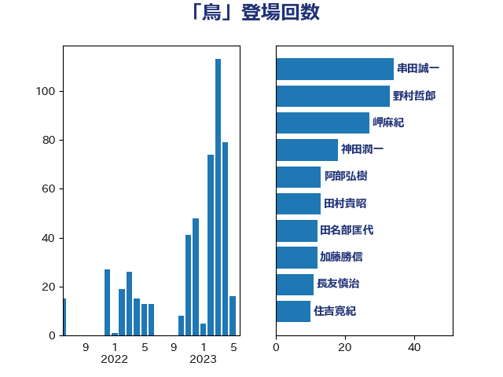

単語「鳥」

| 野上浩太郎 | 自由民主党 | 42 回 |
| 玉木雄一郎 | 国民民主党 | 22 回 |
| 田名部匡代 | 立憲民主党 | 12 回 |
| 近藤和也 | 立憲民主党 | 12 回 |
| 田村貴昭 | 日本共産党 | 10 回 |
| 谷田川元 | 立憲民主党 | 9 回 |
| 須藤元気 | 無所属 | 9 回 |
| 稲津久 | 公明党 | 8 回 |
| 住吉寛紀 | 日本維新の会 | 7 回 |
| 神田潤一 | 自由民主党 | 7 回 |
| 馬場伸幸 | 日本維新の会 | 7 回 |
| 紙智子 | 日本共産党 | 6 回 |
| 串田誠一 | 日本維新の会 | 5 回 |
| 寺田静 | 無所属 | 5 回 |
| 小泉進次郎 | 自由民主党 | 5 回 |
| 金子俊平 | 自由民主党 | 5 回 |
| 森田俊和 | 立憲民主党 | 4 回 |
| 武部新 | 自由民主党 | 4 回 |
| 芳賀道也 | 国民民主党 | 4 回 |
| 葉梨康弘 | 自由民主党 | 4 回 |
| 高橋光男 | 公明党 | 4 回 |
| 吉田忠智 | 立憲民主党 | 3 回 |
| 田村憲久 | 自由民主党 | 3 回 |
| 石井苗子 | 日本維新の会 | 3 回 |
| 伊東信久 | 日本維新の会 | 2 回 |
| 加藤竜祥 | 自由民主党 | 2 回 |
| 宮崎雅夫 | 自由民主党 | 2 回 |
| 小宮山泰子 | 立憲民主党 | 2 回 |
| 山田勝彦 | 立憲民主党 | 2 回 |
| 岸田文雄 | 自由民主党 | 2 回 |
| 有村治子 | 自由民主党 | 2 回 |
| 白石洋一 | 立憲民主党 | 2 回 |
| 神谷裕 | 立憲民主党 | 2 回 |
| 緑川貴士 | 立憲民主党 | 2 回 |
| 藤木眞也 | 自由民主党 | 2 回 |
| 足立康史 | 日本維新の会 | 2 回 |
| 野間健 | 立憲民主党 | 2 回 |
| 金子恵美 | 立憲民主党 | 2 回 |
| こやり隆史 | 自由民主党 | 1 回 |
| ながえ孝子 | 無所属 | 1 回 |
| 三木亨 | 自由民主党 | 1 回 |
| 下野六太 | 公明党 | 1 回 |
| 中川宏昌 | 公明党 | 1 回 |
| 中村裕之 | 自由民主党 | 1 回 |
| 倉林明子 | 日本共産党 | 1 回 |
| 北神圭朗 | 無所属 | 1 回 |
| 古屋範子 | 公明党 | 1 回 |
| 大野敬太郎 | 自由民主党 | 1 回 |
| 宮本徹 | 日本共産党 | 1 回 |
| 小川淳也 | 立憲民主党 | 1 回 |
| 山下芳生 | 日本共産党 | 1 回 |
| 山本博司 | 公明党 | 1 回 |
| 岸真紀子 | 立憲民主党 | 1 回 |
| 志位和夫 | 日本共産党 | 1 回 |
| 松川るい | 自由民主党 | 1 回 |
| 柿沢未途 | 無所属 | 1 回 |
| 梅村みずほ | 日本維新の会 | 1 回 |
| 橘慶一郎 | 自由民主党 | 1 回 |
| 櫻井充 | 自由民主党 | 1 回 |
| 武田良太 | 自由民主党 | 1 回 |
| 武見敬三 | 自由民主党 | 1 回 |
| 比嘉奈津美 | 自由民主党 | 1 回 |
| 池下卓 | 日本維新の会 | 1 回 |
| 池田佳隆 | 自由民主党 | 1 回 |
| 泉健太 | 立憲民主党 | 1 回 |
| 渡辺創 | 立憲民主党 | 1 回 |
| 熊野正士 | 公明党 | 1 回 |
| 片山さつき | 自由民主党 | 1 回 |
| 田嶋要 | 立憲民主党 | 1 回 |
| 田村智子 | 日本共産党 | 1 回 |
| 石川香織 | 立憲民主党 | 1 回 |
| 笠井亮 | 日本共産党 | 1 回 |
| 篠原孝 | 立憲民主党 | 1 回 |
| 簗和生 | 自由民主党 | 1 回 |
| 若松謙維 | 公明党 | 1 回 |
| 西村康稔 | 自由民主党 | 1 回 |
| 西田実仁 | 公明党 | 1 回 |
| 青木愛 | 立憲民主党 | 1 回 |
| 高良鉄美 | 無所属 | 1 回 |
| 高階恵美子 | 自由民主党 | 1 回 |
| 高鳥修一 | 自由民主党 | 1 回 |